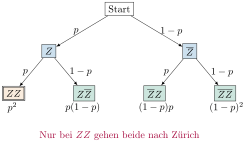
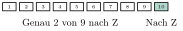

Aufgabe 7.6
Auf einem Flughafen werden die aufgegebenen Gepäckstücke unabhängig voneinander auf ein Förderband gelegt. Die Wahrscheinlichkeit, dass ein Gepäckstück Zürich als Zielflughafen hat, sei p.
- Berechnen Sie p aus der Beobachtung, dass von zwei aufeinander folgenden Gepäckstücken mindestens eines mit der Wahrscheinlichkeit von 93.75% nicht nach Zürich geht.
- Nun werden 10 aufeinander folgende Gepäckstücke
betrachtet. Bestimmen Sie die Wahrscheinlichkeit folgender
Ereignisse:
- A:
- Exakt drei Gepäckstücke haben Zürich als Ziel.
- B:
- Das 10. Gepäckstück ist das dritte nach Zürich.
- C:
- Genau drei Gepäckstücke haben das Ziel Zürich und kommen direkt hintereinander
- Für (a): Nutzen Sie, dass «mindestens eines nicht nach Zürich» das Komplement zu «beide nach Zürich» ist
- Für (b)A: Standardanwendung der Binomialverteilung
- Für (b)B: Das 10. muss nach Zürich, von den ersten 9 genau 2
- Für (b)C: Überlegen Sie, wo die drei aufeinanderfolgenden Gepäckstücke beginnen können
(a) Bestimmung von p:
Gegeben: $P(\text{mindestens 1 von 2 nicht nach Zürich}) = 0.9375$
Wahrscheinlichkeitsbaum für 2 Gepäckstücke:

Das Gegenereignis ist: «Beide Gepäckstücke gehen nach Zürich»
(b) Wahrscheinlichkeiten mit p = 0.25:
| Gegeben | Gesucht |
| $p = 0.25$ (aus Teil a) | Wahrscheinlichkeiten für |
| $n = 10$ Gepäckstücke | verschiedene Ereignisse A, B, C |
| $X \sim B(10, 0.25)$ | $P(A)$, $P(B)$, $P(C)$ |
Einheitliche Visualisierung der Gepäckanordnungen:
Ereignis A: Exakt drei Gepäckstücke haben Zürich als Ziel
Ereignis B: Das 10. Gepäckstück ist das dritte nach Zürich
Visualisierung:

Ereignis C: Genau drei nach Zürich, direkt hintereinander
Die drei aufeinanderfolgenden Gepäckstücke können an 8 verschiedenen Positionen beginnen:
Vergleich der Ereignisse:
| Ereignis | Beschreibung | Wahrscheinlichkeit |
| A | 3 nach Zürich (beliebige Anordnung) | 25.0% |
| B | 10. ist das dritte nach Zürich | 7.5% |
| C | 3 nach Zürich (konsekutiv) | 1.7% |